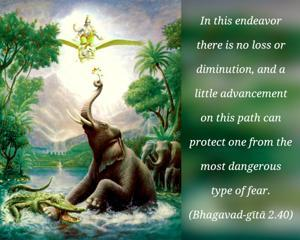
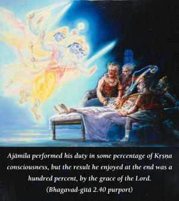
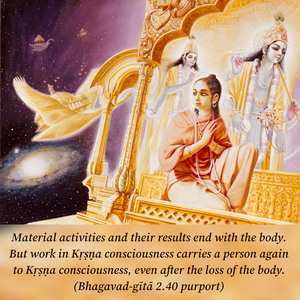

In this endeavor there is no loss or diminution, and a little advancement on this path can protect one from the most dangerous type of fear.



Activity in Kṛṣṇa consciousness, or acting for the benefit of Kṛṣṇa without expectation of sense gratification, is the highest transcendental quality of work. Even a small beginning of such activity finds no impediment, nor can that small beginning be lost at any stage. Any work begun on the material plane has to be completed, otherwise the whole attempt becomes a failure. But any work begun in Kṛṣṇa consciousness has a permanent effect, even though not finished. The performer of such work is therefore not at a loss even if his work in Kṛṣṇa consciousness is incomplete. One percent done in Kṛṣṇa consciousness bears permanent results, so that the next beginning is from the point of two percent, whereas in material activity without a hundred percent success there is no profit. Ajāmila performed his duty in some percentage of Kṛṣṇa consciousness, but the result he enjoyed at the end was a hundred percent, by the grace of the Lord. There is a nice verse in this connection in Śrīmad-Bhāgavatam (1.5.17):
tyaktvā sva-dharmaṁ caraṇāmbujaṁ harer
bhajann apakvo ’tha patet tato yadi
yatra kva vābhadram abhūd amuṣya kiṁ
ko vārtha āpto ’bhajatāṁ sva-dharmataḥ
“If someone gives up his occupational duties and works in Kṛṣṇa consciousness and then falls down on account of not completing his work, what loss is there on his part? And what can one gain if one performs his material activities perfectly?” Or, as the Christians say, “What profiteth a man if he gain the whole world yet suffer the loss of his eternal soul?”
Material activities and their results end with the body. But work in Kṛṣṇa consciousness carries a person again to Kṛṣṇa consciousness, even after the loss of the body. At least one is sure to have a chance in the next life of being born again as a human being, either in the family of a great cultured brāhmaṇa or in a rich aristocratic family that will give one a further chance for elevation. That is the unique quality of work done in Kṛṣṇa consciousness.